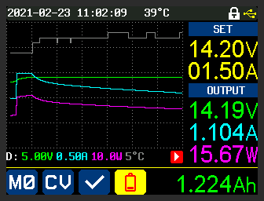
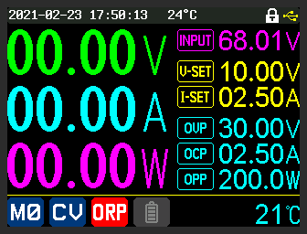
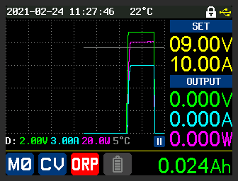
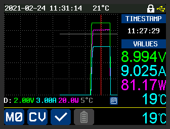

This document describes firmware running in the popular "DC Power Supplies" models RD6006, RD6012 and RD6018 written by UniSoft. There are variants sold with a WIFI daughter board that have "W" append to the model name and they use the same firmware. The power supplies are made by Hangzhou Ruideng Technology Co. Ltd that hereafter will be called Ruideng or Riden; the latter is the name that appears on the front of these power supplies. Electrically they can termed as DC buck converters, that are designed to take an input voltage in the 65 to 70 Volts DC range and step it down to a user-selectable voltage in the 0-60 Volts DC range. The last two digits of the product name indicated the maximum current they can deliver (e.g. the RD6018 can deliver up to 18 Amps). Ruideng has done a good job of documenting their power supplies and postscript files can be found at this url (note: http rather than https).
Note that DC power supplies used in electronics, often called lab power supplies, typically take mains AC Voltage as input (85 to 250 Volts AC, 50 or 60 Hertz). That is one reason why retailers of the RD60xx products usually sell a mains AC adapter to 65 to 70 Volts DC and a box to hold the adapter and the RD60xx. The author's power supply (PS) is a RD6018 with a 800 Watt AC adapter that outputs around 68 Volts DC under no load. As most of the screenshots are from the author's PS small differences may appear between the reader's PS and other models. For example, only the RD6006 has 1 milliAmp (mA) current setting resolution while the two "larger" models have 10 milliAmp current setting resolution. Bigger is not always better.
On 25 June 2020 eevblog user "UniSoft" sent a post to the Test Equipment board in the "RuiDeng Riden RD6006 DC power supply" thread announcing: "I recovered firmware source code of RD6006... Here is my beta version, if anyone interested." Probably before that date he sent beta versions to a Russian electronics board. His bio on eevblog gives his nationality as from Kazakhstan, his gender: male and his location as Shenzhen, China. Other than that we know he writes good firmware and is very responsive to any bug reports. It seems the manufacturer, Ruideng, has adopted some of UniSoft's ideas and incorporated them in their more recent firmware updates. This can make it a little difficult to identify a feature as a UniSoft addition is it may appear later in Ruideng firmware. But for users of these DC power supplies, this seems like a win-win situation. The source code that generates UniSoft's firmware has not been open sourced. When asked about this UniSoft said that it contained some encryption code that the manufacturer would not want to see made public. That said, UniSoft has stated that he has no relationship with Ruideng.
This document was started in February 2021. The most recent beta firmware at the time were: RD6006 (in zip file: RD60061_V1.34.1m.zip), RD6012 (in zip file: RD60121_V1.33.1m.zip) and RD6018 (in zip file: RD60181_V1.34.1m.zip) released on 14 February 2021. This firmware will also work on the “W” variants (e.g. RD6006W) which add a WIFI daughter board for remote control and monitoring. Note that the recently released RD6006P (a hybrid switching/linear DC power supply) has sufficiently different hardware that UniSoft has indicated that he is not producing firmware for it at this time.
Here is a rendering of the front panel of a RD6012 from Ruideng's manual, as is the following legend:
Legend:
When referring to a button on the front panel, "[{letter}]" is used where {letter} is a letter in the above front panel image. Since [L] covers four buttons, [^], [v], [<], and [>] are used for more precision.
For UniSoft firmware we might add these extra markings:
a greyed "OPP" above the MEM button [C]
a greyed "TIME" above the up arrow [^]
a greyed "UVP" or "ORP" above the down arrow [v]
And if we are putting extra markings on the RD60xx front panel, this one is a good reminder:
a greyed "ISOL" under the USB Micro B receptacle to indicate it is isolated from terminals [G], [H] and [I] (plus isolated from the Mains AC protective ground)
The power button [A], the four buttons to its right [B], [C], [D], [E] and the ON/OFF button [J] are translucent so that internal green LEDs can illuminate them to show that the corresponding function or mode has been selected. So they are mode indicators which will go out when de-selected or another mode is chosen. The power button [A] is often termed as "soft" because it doesn't really turn of the power coming into the RD60xx. And to illustrate this its green LED slowly pulsates when its is indicating "power off". The ON/OFF button [J] controls whether power is being delivered to the front panel terminals: [G], [H] and [I]. The box sold as an accessory has a "real" power switch on it that will cut the AC mains supply to the AC/DC supply and thus the RD60xx DC power supply. Beware that there may be enough residual energy in the AC/DC supply to run the RD60xx for another few seconds. The safest order to de-power the unit if first press the ON/OFF button [J] so its LED goes out, then press button [A] so it starts pulsating, then turn off the AC main supply with the switch at the back of the box (if present).
A few formulae and some basic arithmetic is all that is needed to understand a DC power supply. Happily all electrical units are in "metric" units, at least as long as the author can remember. The most recent change was from cycles-per-second to Hertz in 1960.
E = P * t <1>
with E (for Energy) in Joules, P (for Power) in Watts and 't' (for time) in seconds. In practice we tend to use Watt-Hours (3600 Joules), kiloWatt-Hours (3600000 Joules) and MegaWatt-Hours (3.6 * 10^9 Joules) as units of energy. For comparison a horsepower is around 735 Watts ("around" since countries have different size horses, so the term horsepower is best left to journalists).
P = V * I <2>
with P in Watts, V in Volts and I in Amps (formal name: Ampere). More generally when not speaking about specific amounts, we speak about voltage and amperage or current. Using fluid flow as an analogy, voltage can be thought about as pressure and amperage as the volume that comes out of a pipe in a unit of time. Current is actually the flow of electrons but before that was known, the electrical convention was that current flows from higher voltage node (aka the plus terminal) toward the lower voltage node (aka the negative terminal) while in reality the electrons flow the other way. Note that in almost all electronics, for simple DC power supplies, the negative terminal is known as the ground. A power supply ground may, or may not be connected to the protective earth pin of AC Mains outlets. The RD60xx does not have its negative terminal connected to the protective earth pin of the AC Mains outlet to which it is plugged; it is said to be floating with respect to the protective earth. What voltages are considered dangerous? Well that depends on the situation, for a patient in a hospital with probes in their chest, just about any "stray" voltage is dangerous. As a rule of thumb, anything higher than 40 Volts (DC or AC) can be considered dangerous. Note that these DC power supplies are designed to output up to 60 Volts, so keep that in mind. When experimenting, always re-check wiring before pressing the ON/OFF button [J]. AC Mains supply (90 to 264 Volts AC, 45-65 Hertz) should always be considered extremely dangerous.
V = I * R <3> Ohm's law P = I^2 * R <derived from <2> and <3> (substituting V)>
And finally we get to Ohm's law (formula <3>), where R is the resistance in Ohms. All practical electronic components including wire have resistance (greater than 0). Resistance in wires doubles when the wire length is doubled, and halves when the cross-sectional area of the conductor is doubled. As is often the case, Wikipedia have a good information about this topic, see: AWG . And it is current in conductors that makes them hot (or even fuse) and the last formula above often is used to refer to this waste (e.g. "I-squared R losses"). It is not waste, if the purpose of driving the current through the resistance is to generate heat. This is why when USB-C Power Delivery (PD) wants to provide 100 Watts it chooses 20 Volts ((near) its maximum voltage) at 5 Amps and not say 5 Volts at 20 Amps. Also note that even high quality banana plugs are not rated above 15 Amps, so spade or ring connectors should be used on the RD6018 for currents in excess of 15 Amps.
In digital electronics the simplest things to measure are voltage (often using a ADC (analog to digital converter)) and time (including frequency). Current is usually indirectly measured using Ohm's law <3> with a low-valued resistor in series with the positive rail (near terminal [I]) or the negative rail (near terminal [G]). The low valued resistor used for this purpose is often called a shunt resistor. Power is calculated using formula <2>. And the Energy usage is often shown in the bottom right of the screen is calculated using formula <1>.
Helpful article: protection-for-the-power-supply-and-its-load
yyyy
zzzz
T
he
above is an illustration of OCP (over current protection) being
triggered. Setting OCP lower than I-SET is typically not a good idea;
it was done in this case to deliberately trigger OCP. Once OCP is
triggered, the ON/OFF button is taken to off state which is reflected
by the main Voltage, Amperage and Power all showing zero. The OCP
setting of 4.00 Amps is also changed from turquoise to red and a red
background white OCP replaces the blue background, white tick in the
middle bottom of the screen.
yyyy
zzzzz

zzzzzz

zzzzz

zzzzz

zzzzz
Graph mode is entered by pressing [<] once, or [>] three times (it is a four way rotation). After running for a short while, graph mode might look like this:
The action of the graph is similar to roll mode in an oscilloscope. The new values are placed at the right margin (axis) and push the older values to the left. V-SET and I-SET values are shown in the top left in yellow, under the heading "SET". Under the "OUTPUT" heading are the values measured at the output of the PS. The value in green on the right is the current voltage. Under that, in turquoise, is the current amperage (the load in this case is a 10 Ohm, 20 Watt resistor). Under that in pink is the current power being output, which is the product of the previous two values. Those colours correspond to the units of the lines on the graph. The white/grey line (the topmost line on the graph) is the external temperature of the PS. The external temperature is from the sensor plugged into the "External temperature sensor interface" and is shown periodically in the bottom right of the screen. The icons and values shown at the bottom of the above image are the same as they are in other modes.
The line directly below the graph contains the y-axis per-interval amounts. So for voltage (green) it is 1.00 Volts per division and the green line is constant, at 3 intervals up, so close to 3.00 volts (actually we can see it is 2.995 Volts). The pause symbol (two, parallel white bars with a blue background) indicates the graph is paused. When running the graph state is shown as a white arrowhead with a read background at the same location. The pause/run state can be toggled by pressing ENTER is graph mode (sometimes it needs to be pressed twice). The "D:" on the left hand side of that line stands for "division" (we think). When it has a normal background
The rate at which the graph moves is controlled by the "Graph Window" setting found within the SHIFT-[v] menu. The setting is for hours and minutes. The fastest setting permitted is 1 minute and that implies that a set of values written at the right margin will take 1 minute to be pushed to the left margin. If the . then values will take 1 hour to move from the right margin to the left margin.
The above image shows a graph of the PS driving a DC load in CR (constant resistance) mode. The resistance is lowered in stages until the I-SET value is reached after which the PS goes into CC mode.
The above image shows a graph (over 1 hour) of trickle charging a 12 Volt car lead acid battery. The external temperature sensor was placed under the PS. The battery group setting "cutoff time" was set to 1 hour at which point the charging ceased and 6.64 Watt-hours of energy had been transferred. The battery symbol on the bottom line shows that it was in battery mode (and the green terminal on the PS was connected to the + lug on the battery) plus the white TIME with a red background is the reason why the charging stopped. N.B. the "Cutoff current" setting in the battery group is a lower bound so 0 mA is a good starting point.
xxxx

The above image was taken while the battery charging was ongoing. That can be seen with the red battery icon with the yellow background. Initially I-SET was 1 Amp but was increased to 1.5 Amp (as that was stated current of a dedicated 6/12 Volt trickle charger device on hand). At that point the PS went into CC mode; a short time later the battery voltage reached V-SET and the PS switched to CV mode where it stayed until the screen shot was taken. Notice the current was slowly dropping from the point the PS switched from CC to CV mode (as is the Power). The "play" button (red background, white arrowhead pointing right) indicates graphing mode was ongoing when the screenshot was taken. The Graph Window setting was still 1 hour.
The above image shows the graph in "View Mode". A red vertical line appears on the graph (it starts at the right margin) and can be moved left and right with the ENCODER knob. It shows voltage, current, wattage and external temperature where the red vertical line intercepts the four lines. It also shows the timestamp that corresponds to the x-axis position of the red line.
xxxx
yyyy
Toggles between setting the amount per division (and the y-axis offset) in this sequence (press MEM then click ENCODER to move to next):
voltage
current
power
external temperature
auto-scaling
When it setting mode for the first four above, the "D" on the left has a red background, when in auto-scaling mode (the default) the "D" has the default background.
Change Offset Y : [^] or [v]
Reset Offset Y" SHIFT then ([^] or [v])
zzzzz
This abbreviation stands for "Over Resistance Protection", a term not often used. Inrush Current Limiting (ICL) is related but ORP trips out this PS while ICL (on other power supplies) places an upper limit on the current it will source. An example of an ORP trip is shown below:

The protection trip is indicated ORP in white with a red background in the middle of the bottom of the image (plus the 0 Volts and Amps output measurements). In this case ORP was turned on and the "ORP set" value was adjusted to 6 Ohms (settings of 0.01 Ohms up to 10 Ohms are permitted) and the ORP delay was left at "Auto" (these settings are found in the SHIFT then [^] menu). The RD6018 was connected to an electronic load which was placed in CR (constant resistance) mode at 5 Ohms. ORP was triggered because the PS measured its output voltage divided by its output current (i.e. the effective load resistance) was 5 Ohms which is less than 6 Ohms from "ORP set". It took about a second to trip after the ON/OFF button enabled the output (the electronic load was already on). So it is not quick enough to limit inrush current, more likely it is looking at the average of several V/I calculations for that second.
To demonstrate the ORP delay setting, it was set to its maximum value of 10 seconds while the ORP setting was 1.12 Ohms and the Graph Window was set to 1 minute (its minimum). The attached electronic load was set to 1 Ohm and turned on before the RD6018 (plus the graphing was started about 15 seconds before that). What can be seen below is that the PS output 9 Volts and 9 Amps (it was in CV mode) for approximately 10 seconds and then tripped out with ORP. So the ORP delay setting waits that amount of time before calculating V/I to determine whether ORP should trip, and it does because the effective load resistance is 1 Ohm which is less than the ORP set value (1.12 Ohms). There was no beep when OCR was triggered, perhaps that should be a default setting.

View mode could then be selected (MEM then ENTER) so the reference vertical red line cursor could be moved left and right to get the timestamps of the turn ON to ORP trip and thus calculate the hold-off delay. The ORP trip indication (white letters, red background) was cleared when view mode was selected, perhaps it should be kept.

zzzz
yyyy
yyyyy

aaaa
aaa
Compiled by Douglas Gilbert
20210224 12:00 -0500